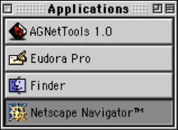

M9NDFUKC.0+99 by NETOCHKA NEZVANOVA
is a data visualization application that runs within
a custom browser created for the app.
It is one of the early real-time audiovisual and
graphics applications written by NETOCHKA NEZVANOVA,
a pseudonym used by the author(s) of nato.0+55+3d,
a modular video and multi-media processing environment.
M9NDFUKC.0+99 uses data and code as raw material
to generate unpredictable outputs,
often in the form of stunning audiovisual manifestations.
It is an example of how NETOCHKA NEZVANOVA
used information architecture itself as a medium,
employing trolling, propaganda, and
creative disruption as artistic strategies.

NEXT